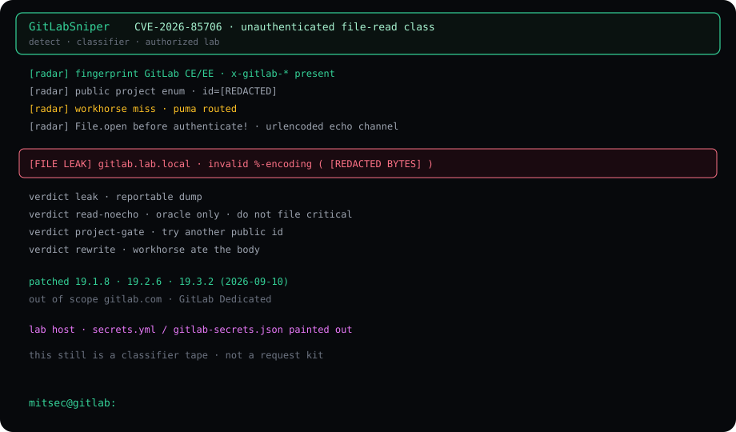

Summary
CVE-2026-85706 is an unauthenticated local file read on self-managed GitLab Community Edition and Enterprise Edition. Three repository endpoints sit behind Workhorse requestBodyUploader. Rails takes the raw file.path field and runs File.open before authenticate!.
require_gitlab_workhorse! is not a gate here. Workhorse already stamps a valid Gitlab-Workhorse-Api-Request JWT on anything it proxies. The bug is the parser split: Workhorse matches EscapedPath() and a path.Clean clone that never percent-decodes. Puma decodes %XX before Grape routing. One side misses. The other routes. Rails opens the path.
gitlab.com and GitLab Dedicated are out of scope. The patch window is 19.1.8 / 19.2.6 / 19.3.2 (2026-09-10).

The split
Confirm signal (class)
A honest confirm is not “GitLab HTML 200.” On an authorized lab the operator looked for the leak substring in the 400 body:
invalid %-encoding ( file bytes after the paren · that is FILE LEAK
Files with no lone % can still be opened. That returns read-noecho. That is an oracle. Do not file a critical on an oracle.
Verdicts
leak— bytes ininvalid %-encoding (. Reportable.leak-fragment— partial echo. Attach the body.read-noecho— opened, not echoed. Oracle only.missing— bypass reached disk, file absent.project-gate— 404 Project Not Found. Another public id.rewrite— Workhorse rewrote the body. That form is dead.noroute— plain 404. Patched or wrong path.
CVE-2026-85706 GitLab CE/EE self-managed class CWE-22 path used before auth impact unauthenticated local file read auth none patched 19.1.8 · 19.2.6 · 19.3.2 lab gitlab.lab.local affected 18.7–19.1.7 · 19.2.0–19.2.5 · 19.3.0–19.3.1 out of scope gitlab.com · GitLab Dedicated mitsec@gitlab:
What GitLabSniper does on the wire
The public helper fingerprints GitLab, enumerates public project ids, walks the Workhorse-miss matrix, and only prints FILE LEAK when the 400 body carries the encoding echo. Pipeline mode accepts raw hosts and httpx lines.
This page does not reprint the request matrix or a ready-to-paste request. Those live in the repo for people who already have scope.
Fix
- Upgrade to 19.1.8 / 19.2.6 / 19.3.2.
- If the instance was reachable in the window, rotate secret_key_base, otp_key_base, DB passwords and SSH material on disk.
- Hunt access logs for repository POST traffic that carried a file.path field.
Repo
GitLabSniper stays on GitHub. Classifier model: guneykabel/cve-2026-85706. Vendor report credit: s3ntago via GitLab HackerOne.